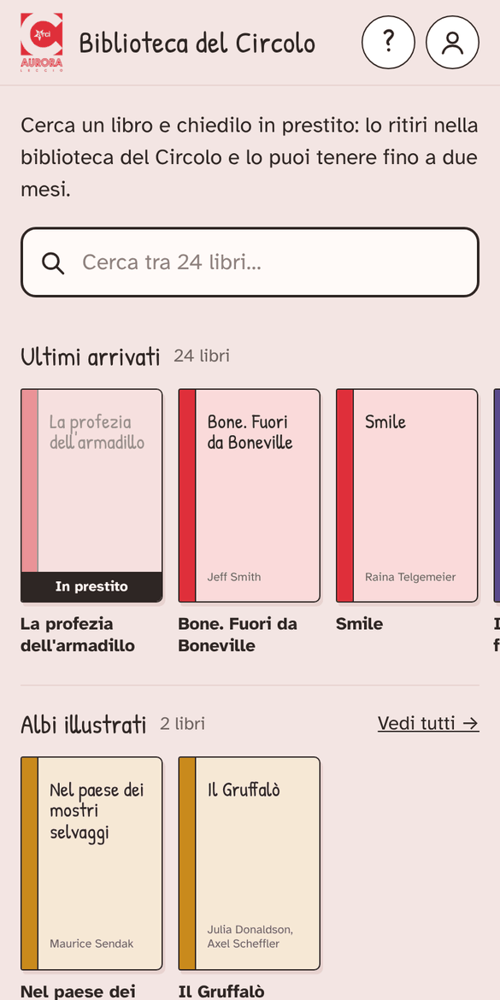
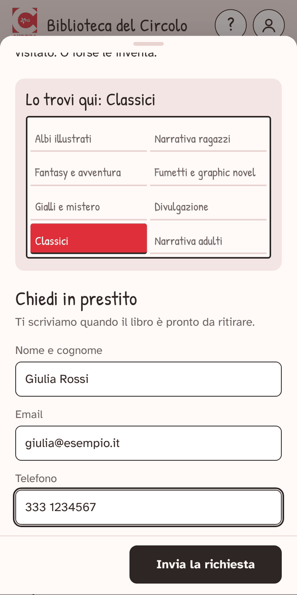
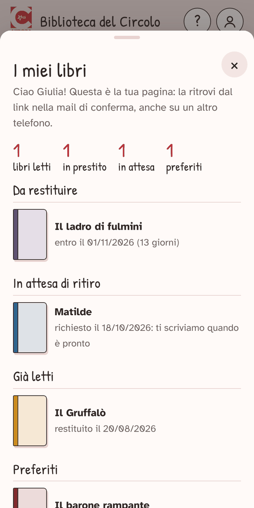

Biblioteca del Circolo ARCI Aurora · Leccio
circolo-aurora.github.io/biblioteca
Come funziona
Cerchi un libro, vedi se c'è e dove sta, lo chiedi in prestito e lo ritiri in biblioteca. Senza registrazione.
Dal browser o tra le app
Funziona già aprendo il link. Se la vuoi tra le app del telefono, con la sua icona:
Android
- Apri il sito con Chrome.
- Menu ⋮ in alto a destra → Aggiungi a schermata Home.
- Scegli Installa.
iPhone
- Apri il sito con Safari.
- Tocca ••• in basso, poi Condividi (sugli iPhone non aggiornati Condividi è già in basso).
- Aggiungi alla schermata Home → Aggiungi.
Trova un libro
- Scorri gli scaffali oppure scrivi titolo o autore nella casella in alto.
- Tocca una copertina: vedi la trama e su quale scaffale si trova.
- Disponibile
- puoi chiederlo.
- Prenotato
- l'ha già chiesto qualcuno.
- In prestito
- qualcuno lo sta leggendo.

Chiedilo in prestito
- Nella scheda del libro tocca Chiedi in prestito.
- Scrivi nome, email e telefono e invia. Ti arriva una mail di conferma.
- Quando il libro è pronto ti contattiamo: lo ritiri in biblioteca.
- Lo tieni due mesi, poi lo riporti.
Non hai una mail? Usa quella di un genitore.

I miei libri
Tocca l'omino in alto a destra: trovi i libri che hai in prestito con la scadenza, quelli da ritirare, quelli già letti e i preferiti.
- Il pallino rosso sull'omino ti avvisa quando manca una settimana alla scadenza.
- Il cuore nella scheda di un libro lo mette tra i preferiti.
- Su un altro telefono apri il link nella mail di conferma.
Un libro che non c'è? In fondo alla pagina tocca Suggerisci un libro.

Domande
Devo registrarmi?
No, bastano nome, email e telefono quando chiedi un libro.
Quanti libri posso chiedere?
Quanti vuoi.
Mi serve più tempo.
Rispondi alla mail di conferma o chiedi in biblioteca.
Ho cambiato idea.
Rispondi alla mail di conferma: la richiesta viene annullata.
Non mi è arrivata la mail.
Guarda nello spam. Se hai visto «Richiesta inviata», la richiesta è arrivata comunque.
Come lo restituisco?
Riportalo in biblioteca negli orari di apertura.
Chi vede i miei dati?
Solo chi gestisce la biblioteca, e solo per i prestiti.